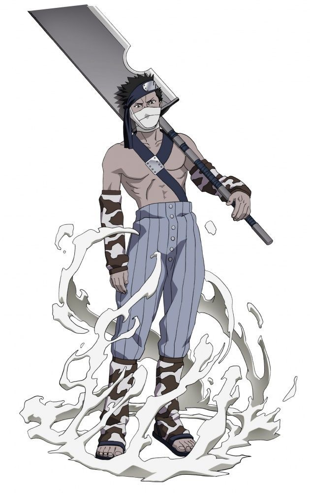

Call us on
Call us on  English
English Russian
Russian Kazakh
Kazakh Ukraine
Ukraine
Love polls? Do you want to see epic battles of various characters from various universes of pop culture? Then join our public INFINITY FIGHTS and vote for the strongest hero! Also in the discussions you can offer your options for battles. We welcome all newcomers and appreciate the old, but nevertheless we appreciate mutual respect and adequate behavior. Peace to all, meet in the heat of battle!
Zabuza Momochi
"Do you want to know whether I'm a demon or not?! Meet me in Hell, you'll find out there!"
Biography:
Skills and powers.
- - Physical strength far exceeds the peak of a person.
- - It is equal in strength to Kakuzu, capable of knocking out huge iron gates weighing more than 187 tons with a blow, which allows Zabuza to easily wield a 2 meter sword even with one hand.
- - Able to easily cut an adult tree with one blow and throw his sword many meters away, spinning it.
- - The speed and reaction of the Blood Mist Shinobi are hypersonic.
- Endurance and a large supply of chakra allow you to fight for several hours without feeling tired, but prefer a quick kill to a protracted fight;
- - Durability allows you to survive the impact of a huge stream of water jutsu of the great waterfall, capable of demolishing a small building and multi-meter free flight with a blow to a tree;
- - High survivability and pain threshold. Even when he was severely injured and both of his arms were crippled by deep stab wounds, Zabuza proved to be a very dangerous opponent, being able to destroy dozens of Gato's specially hired bodyguards and, in the end, Gato himself with a kunai in his mouth, without using his hands.
- - Master of kenjutsu, was in the team of seven swordsmen of the fog of the strongest generation. Also wields standard ninja weapons;
- + Substitution Jutsu - the enemy hits Zabuza, but it turns out that the blow was delivered to the log;
- + Transformation - temporarily turns into another person or object;
- + Illusory Clone. Creates a motionless illusion of himself;
- + Shadow Clone (Spawns a shadow clone of himself, the technique dissipates as soon as the clone is hit). The experience gained by the clones is transferred to the owner as soon as the clone disappears;
- + "Shunshin no Jutsu" - the body becomes invisible and almost weightless, gives fast movement over short distances, seems to be teleportation;
- + The ability to run and stand on vertical surfaces and ceilings, as well as stand on water thanks to the chakra;
- + Capable of releasing chakra in the form of an oni demon to intimidate opponents. This chakra, along with madness and bloodlust, caused experienced bandits to disperse in fear;
- + Suiton (water technicians) - water management techniques. Generally effective when there is a source of water. Effective against fire techniques, but inferior to earth techniques.
- + "Water clone" - a clone created from water. A rather weak technique, since the clone's chakra is only 10% of the original, but it consumes much less chakra than the shadow one. The clone is not able to move far from the creator and disappears after being hit by one attack.
- +"Water Prison Technique" - a technique that locks the opponent in a ball of water. The water in it becomes heavy and hinders the movement of the enemy, getting out of the sphere is quite difficult, but to maintain the technique, Zabuza must touch the ball with his hand. The water bubble is stronger than steel.
- +"Water Dragon Projectile Technique" - the technique creates a dragon from water 30 - 50 meters high, which rushes at the enemy. To create a technique, 44 hand seals are required.
- +"Water Wall Formation Technique" is a technique that serves to protect. After the seals are sealed, a water barrier protects Zabuza from attacks for a short time. The shield's durability is low, but it allows you to defend against quick or all-round attacks, as you can completely surround yourself with a wall of water.
- +"Great Waterfall Technique" - the technique creates and controls a huge stream of water, directing it towards the enemy. The flow of water is very powerful, capable of knocking the enemy down and spinning in a whirlpool. The wave size is estimated at several tens of meters;
- + "Hidden Fog Technique" - a technique in which Zabuza can create fog in a certain area and be invisible to enemies in it. The main technique of Zabuza, a silent assassination specialist. Having disoriented the enemy with a dense fog, Zabuza throws them from a distance with shuriken or melee attacks, including using clones. Zabuza himself does not see in the fog, but he accurately orients himself by hearing. The fog is saturated with chakra and even the Sharingan does not help to navigate it;
- He owns all standard and his own jutsu:
- - Kubikiribocho (decapitator, executioner) - one of the seven legendary swords of the Swordsmen of the Mist. A special property of the sword is that it uses the blood of its victims to repair damage, thus never becoming dull or jagged. A very large and heavy two-handed sword approximately two meters long, Zabuza wields it with ease with one hand and is a skilled swordsman. If necessary, the blade handle can be extended.
- - Tanto - a short katana;
- - Kunai;
- - Kunai of the village hidden in the fog has an additional short blade on the side;
- - Shurikens;